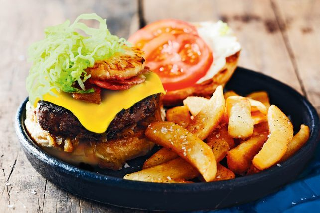

hamburger

Description
Matt Preston says that, "A great burger has a balance of crunch, creaminess, freshness, saltiness and tang to contrast with the crusty-edged meat and soft bun. It also has a structural integrity that means the middle doesn’t drop out the back on the first bite!"
Ingredients
- 20g unsalted butter, plus extra to serve
- 1kg onions, thinly sliced
- 2 tsp brown sugar
- 600g beef mince
- 150g sausage meat (optional – add the sausage meat if the mince is very lean)
- 2 spring onions, thinly sliced
- 1 tsp Tabasco sauce or 1 tbsp Dijon mustard
- 1 tsp sesame seeds
- 1 cup (60g) shredded iceberg lettuce
- 1 cup (80g) shredded white cabbage
- Juice of 1 lemon
- 4 large soft bread rolls
- 4 middle or streaky bacon rashers
- 4 cheese slices
- 4 pineapple rings
- Tomato sauce (ketchup), to serve
- Whole-egg mayonnaise, to serve
- 2 large ripe tomatoes, thickly sliced
- Fries, to serve